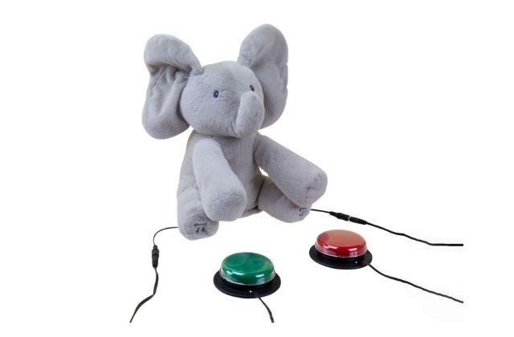
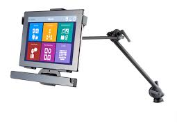
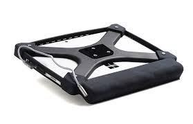
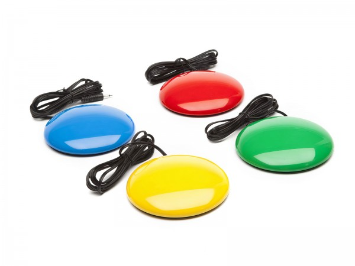
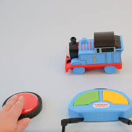
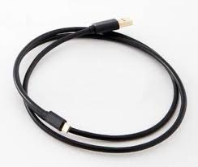

El primer eye-tracker multiplataforma del mundo que ya se conecta de forma nativa a Windows y iPadOS. Es un dispositivo de eye-tracking basado en infrarrojos con el que puedes reemplazar completamente el ratón tradicional y controlar pantallas únicamente con tus ojos. Puedes hacer todo lo que hacemos cuando utilizamos un dispositivo táctil, pero en vez de utilizar las manos, utilizamos los ojos. Además, Hiru tiene la capacidad de conectarse a cualquier dispositivo, sea cual sea su sistema operativo. A Windows y iPadOS se conecta de forma nativa. Hiru tiene el certificado MFI (Made For iPad) de Apple.
¿QUÉ BENEFICIOS APORTA HIRU?
Compatibilidad y Multiplataforma
Compatible con Windows y iPadOS sin necesidad de aplicaciones intermedias, y preparado para ser compatible con otros sistemas operativos
Puede funcionar en diferentes dispositivos, desde ordenadores a tablets, pasando por cajeros, ascensores o controles de acceso
Precisión y Rendimiento
Precisión al píxel, superior a dispositivos anteriores
Tecnología integrada en el chip que procesa todos los datos internamente, liberando al ordenador o tablet de esa tarea
La cámara y los sensores ópticos nuevos brindan mayor precisión y más autonomía
Experiencia de Usuario Mejorada
Estabilizan la experiencia de seguimiento ocular, haciendo que la experiencia de mirada sea más suave, rápida y cómoda
Incluye un botón de calibración y un indicador de luz en el propio dispositivo
Modo de consumo inteligente para reducir el gasto energético
Rango de Movimiento y Autonomía
Permite girar la cabeza de derecha a izquierda con libertad a una distancia entre 35 y 80 centímetros sobre la pantalla
Incorpora varios sensores ópticos con grabación hasta 60 fps y promete unas 5 horas de uso
Actualizaciones Automáticas
El dispositivo notifica automáticamente cuando hay una nueva versión de software disponible
Aplicaciones Diversas
Brinda nuevas oportunidades a usuarios con limitaciones físicas o afecciones motoras para comunicarse, aprender, trabajar o utilizar aplicaciones como YouTube o Spotify con los ojos
En industria 4.0 permite a operarios acceder a información cuando tienen las manos ocupadas o manchadas, y en salud permite a cirujanos utilizar pantallas durante operaciones sin usar las manos
EVOLUCIÓN HISTÓRICA
Historia de HIRU
¿CUÁNDO SE ORIGINÓ?
El IRISBOND Hiru se lanzó al mercado en enero de 2021, tras haber sido desarrollado en colaboración con el centro tecnológico Tekniker para el desarrollo de la electrónica y mecánica del producto. Las pre-reservas estuvieron disponibles a partir del 17 de noviembre de 2020, marcando un hito importante en la evolución de la tecnología de eye-tracking.
LÍNEA DE TIEMPO
Noviembre 2020 - Presentación y Prereservas
El 17 de noviembre de 2020, Irisbond presentó Hiru con pre-reservas disponibles, siendo el tercer producto de eye-tracking de la empresa y el primero en funcionar en cualquier sistema operativo.
Enero 2021 - Lanzamiento al Mercado
Hiru se puso a la venta al público a partir de enero de 2021 con un precio previsto inferior a 2.000 euros. El 30 de abril de 2021, se firmó la Declaración de Conformidad como Dispositivo Médico de Clase I según la Directiva (UE) 2017/745.
2021 - Compatibilidad Inicial
Compatible inicialmente con Windows (7 hasta 10), iPadOS 13 y superiores, y Android. Certificado MFi (Made for iPad) por Apple, lo que permitió integración nativa con iPadOS sin aplicaciones intermedias.
2021-2022 - Integraciones con Aplicaciones
Durante este período se realizaron múltiples integraciones clave:
Grid 3 se integró con Hiru a partir de la versión 61
MindExpress 5 añadió compatibilidad con Hiru
Se añadió compatibilidad con Windows Eye Control mediante la aplicación HiruSystray
Predictable, aplicación de texto a voz para iPad, se optimizó para Hiru con función Snap
2023 - Mejoras Técnicas
La tecnología integrada en el chip procesa todos los datos internamente, liberando al ordenador o tablet de esa tarea. Incorpora algoritmos de software basados en IA que estabilizan la experiencia de seguimiento ocular, haciendo que la experiencia de mirada sea más suave, rápida y cómoda.
2024-2025 - Estado Actual
Hiru continúa evolucionando con mejora continua del software y está preparado para ser compatible con otros sistemas operativos más allá de Windows e iPadOS. El dispositivo mantiene actualizaciones regulares y se expande a nuevas aplicaciones y sectores como industria 4.0, salud, educación y robótica.
¿QUÉ EXISTÍA ANTES DE HIRU?
Antes de Hiru, existían varios dispositivos similares en el mercado. La propia Irisbond había desarrollado productos previos como Irisbond Duo y Primma, mientras que empresas competidoras como Tobii Dynavox dominaban el sector con modelos como PCEye Mini y PCEye Plus, aunque estos últimos fueron descontinuados en 2020.
La principal innovación de Hiru frente a sus predecesores es su compatibilidad multiplataforma nativa. Hiru fue el primer producto de Irisbond en funcionar en cualquier sistema operativo, siendo compatible con Windows y iPadOS sin necesidad de aplicaciones intermedias.
Dispositivos Anteriores
PCEye Mini
Eye tracker ligero y versátil diseñado para tablets, laptops o computadoras Windows. Fue descontinuado el 29 de noviembre de 2020, justo antes del lanzamiento de Hiru.
PCEye Plus
Eye tracker avanzado para computadoras Windows que incluía micrófono para dictado, puerto USB para pulsadores y dongle EyeR para control del entorno doméstico mediante infrarrojos. También fue descontinuado el 29 de noviembre de 2020.
PCEye 5
Lanzado en 2020, fue el primer eye tracker independiente del mundo con capacidades para exteriores. Anunciado por Tobii Dynavox como una evolución que soporta pantallas de hasta 27 pulgadas y puede usarse en exteriores bajo luz solar brillante.
PRODUCTOS DISPONIBLES
IRISBOND HIRU
El primer eye-tracker multiplataforma del mundo. Compatible con Windows y iPadOS de forma nativa. Certificado MFi (Made for iPad) de Apple. Precisión al píxel con tecnología integrada en el chip. Incluye botón de calibración y 5 horas de autonomía.
1.950,00 €

Elefante-Flappy
El elefante Flappy es un juguete adaptado para niños con diversidad funcional, están formados por «una o dos entradas de conmutador para poder ser accionado mediante pulsación». Al jugar, los niños pueden descubrir que la causa y el efecto están relacionados. Mediante el uso de juguetes adaptados, pueden adquirir experiencia en cuanto a qué elementos de control son los adecuados.
89,99 €

IRISBOND DUO
Eye tracker móvil y ligero que se conecta a PC, laptop o tablet con Windows. Compatible con software CAA. Incluye software EasyClick Lite y EyeLearn. Calibración de 1, 5, 9 o 16 puntos. Montaje magnético y fácil configuración en dos pasos. Perfecto para usuarios principiantes en seguimiento ocular.
1.450,00 €

Hiru Oskol (Soporte)
Solución diseñada para contener Hiru y la tablet, protegiendo ambos dispositivos. Facilita y protege tu comunicador dinámico. Ligero, fácil de montar y flexible, asegura el ángulo perfecto para la mejor precisión. Adaptable a cualquier superficie o silla para acompañarte donde vayas.
299,00 €

Pulsador Bluetooth
El pulsador con Bluetooth más utilizado para tabletas, teléfonos móviles y ordenadores. Conecta fácilmente uno o dos interruptores de accesibilidad a tu dispositivo por Bluetooth. Compatible con todos los sistemas operativos. Ideal para acceso alternativo y CAA (Comunicación Aumentativa Alternativa).
149,00 €
Ukitu - Comunicador Táctil
Solución alternativa de comunicación táctil. Sistema Aumentativo y Alternativo de Comunicación (SAAC) de alta tecnología específica para CAA. Ligero, robusto, integrado y flexible. Te permite llevar siempre contigo tu vocabulario mediante pictogramas, texto, o ambas formas. Vocabulario para todos los niveles.
1.750,00 €

Tren Thomas Adaptado
El tren Thomas teledirigido puede dirigirse mediante mando a distancia o conectando 2 pulsadores (tipo jack de 3,5 mm). Fácil de usar: un interruptor hace avanzar el tren y el otro lo hace girar. Juguete adaptado perfecto para trabajar causa-efecto y habilidades motoras.
79,99 €

Cable Adaptador para Juguetes
Este cable permite adaptar fácilmente los juguetes y objetos para un uso con pulsador. Desliza una extremidad en el compartimento de pilas del objeto y enchufa un pulsador en la otra extremidad. Compatible con todos los pulsadores estándar de 3,5 mm. Convierte cualquier juguete en accesible.
24,99 €
¡Hola!
Por favor, rellena el siguiente formulario y nos pondremos en contacto contigo lo antes posible. Queremos asegurarnos de ofrecerte la mejor información y atención. ¡Gracias!
Más Información
Para más información, visita nuestro sitio web oficial: